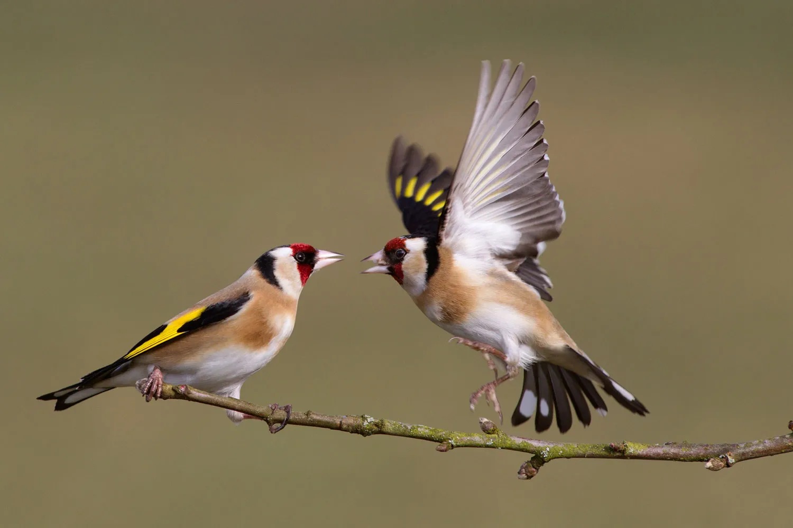

Publication
Waterbirds in the UK 2024–25
Our flagship annual report on wintering waterbirds, drawn from the Wetland Bird Survey and Goose & Swan Monitoring Programme — the work of 4,000 dedicated volunteers.
Read the report →From garden surveys to satellite-tracked migrations, our research turns observation into evidence — and evidence into action for nature.
Our flagship annual report on wintering waterbirds, drawn from the Wetland Bird Survey and Goose & Swan Monitoring Programme — the work of 4,000 dedicated volunteers.
Read the report →
Long-term schemes like the Breeding Bird Survey and BirdTrack track how species fare year on year — the backbone of UK bird science.
Explore the surveys →

Our data informs the people who shape the countryside — from government policy to local conservation.

Dive into BirdFacts, survey results and interactive maps — open data for researchers, students and curious birdwatchers alike.
Explore the data tools →